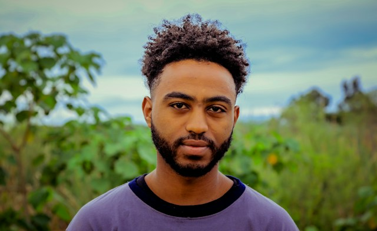

Dr. Grace Namatovu
Director of Crop Resources, MAAIF
Dr. Namatovu leads national programmes that support coffee farmers across Uganda. She has spent two decades improving seed quality and farm advisory services.
Meet the experts shaping the future of coffee
Director of Crop Resources, MAAIF
Dr. Namatovu leads national programmes that support coffee farmers across Uganda. She has spent two decades improving seed quality and farm advisory services.

Chief Executive Officer, East Africa Coffee Traders
Mr. Kiprono manages coffee exports to more than fifteen countries. He is known for building fair, long-term partnerships between growers and buyers.
Professor of Agribusiness, Makerere University
Prof. Byaruhanga researches value addition and market access for smallholder farmers. Her work has guided policy on agricultural cooperatives in the region.
Head of Sustainability, Kilimanjaro Beans Cooperative
Ms. Hassan designs traceability systems that follow coffee from the farm to the roaster. She advises cooperatives on climate-friendly farming and certification.
| Name | Organisation | Country | Session Title |
|---|---|---|---|
| Mr. David Okello | Uganda Coffee Farmers Alliance | Uganda | Smallholder Cooperatives and Fair Pricing |
| Dr. Lucia Fernandes | Brazilian Coffee Research Institute | Brazil | Climate-Resilient Coffee Varieties |
| Mr. Samuel Tadesse | Ethiopian Specialty Coffee Exchange | Ethiopia | Branding Origin Coffee for Export Markets |
| Ms. Claire Dubois | European Roasters Network | France | Meeting EU Deforestation Rules |
We invite researchers, practitioners and students to submit abstracts on any part of the coffee value chain, from farming and processing to trade and policy. Abstracts should be no longer than 300 words and must state the aim, method and main findings.
Papers must be original and written in English. Accepted authors will present their work during the Expo, and the best papers will be recognised at the closing ceremony.
| Milestone | Date | Status |
|---|---|---|
| Call for papers opens | 2 February 2026 | Completed |
| Abstract submission deadline | 30 June 2026 | Open |
| Notification of acceptance | 31 July 2026 | Upcoming |